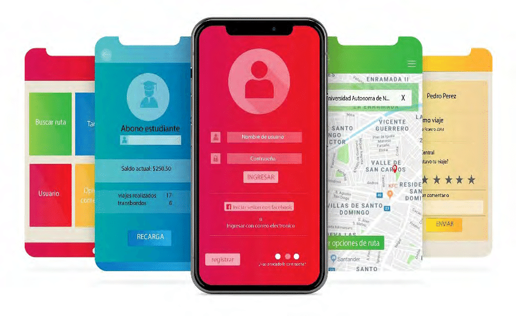

Cualquier app puede beneficiarse estéticamente del uso de buenos gráficos que decoren la interfaz gráfica. No solo eso, también puede facilitar al usuario la comprensión de datos complejos mediante la representaciones gráficas interactivas. En gran medida, los usuarios buscan aplicaciones eficientes, al mismo tiempo que fáciles de usar y estéticamente cuidadas. En este punto estudiaremos algunas de las posibilidades gráficas más sencillas y el manejo de imágenes en nuestra app Android. En un tema posterior veremos cómo podemos mostrar animaciones y efectos de sonido en nuestra app.
UA03. Programando...
3.5. Imágenes
Obra publicada con Licencia Creative Commons Reconocimiento No comercial Compartir igual 4.0